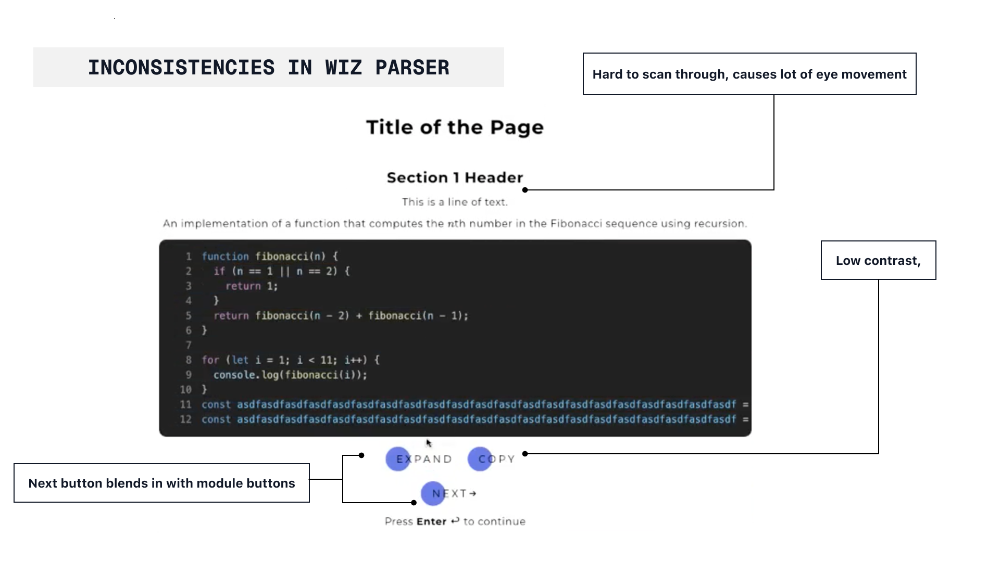
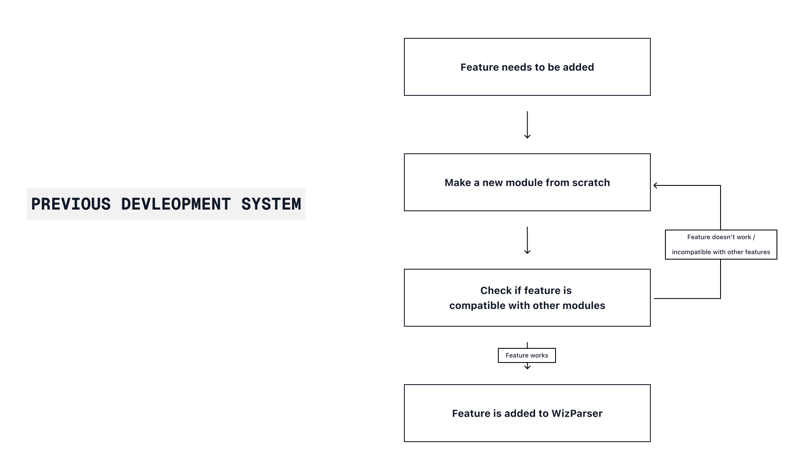
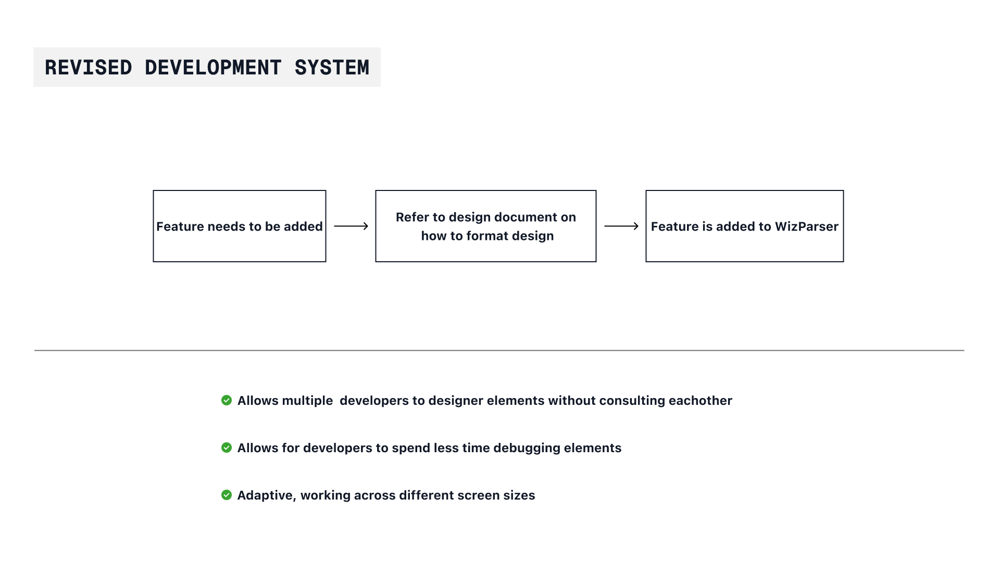
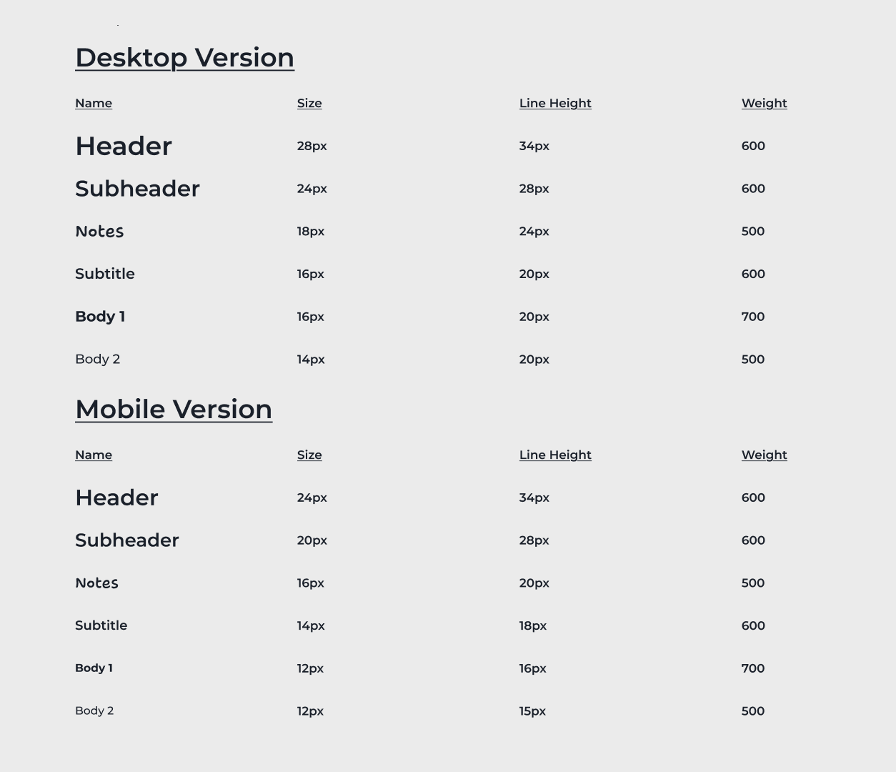
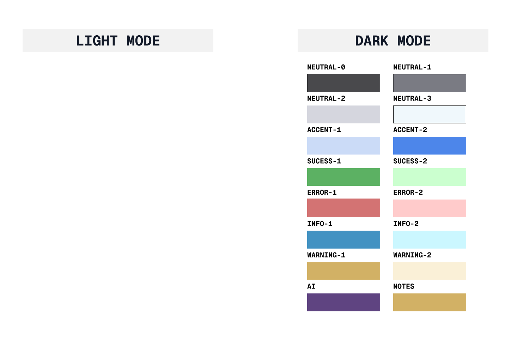
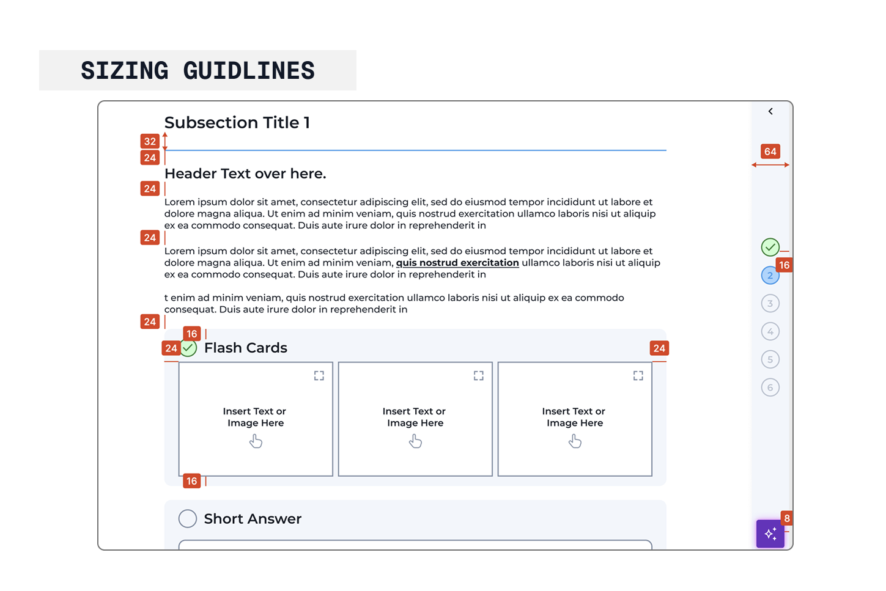
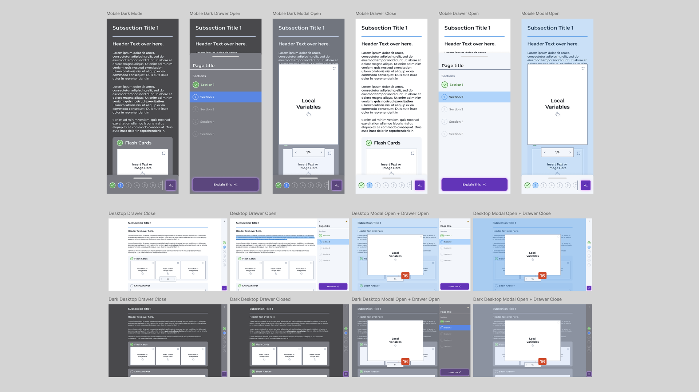

PROBLEMS
Lack of unity creates confusion
The developer I was working with had no system in place for designing the different modules
in
Wiz Parser, instead "designing" them as they were needed, and working off what the previous
developer had done before.
Without a proper system for creating elements in Wiz Parser, the platform lacked consistency
in
both appearance and interactivity.

Creating new elements is time-consuming
One complaint I received from the engineer was how tedious it was to create new elements for
the
modules, as he had to code the CSS for each one from scratch and ensure it didn't interfere
with
others. This new system had to be flexible and compatible with the existing codebase.

CHALLENGE
How do you get developers to move to a whole other way of designing
elements
One thing that I learned from my time working at WizRobotics is that devlopers hate adding more
work for their plate. I couldn't just create a whole new guildline from scratch, as that would
heighten their workload( and make the developers get a headache)
Solution
Perfecting handoff
Since I was creating a system for a team with limited experience in Figma, it needed
to
be
easily translatable to development and ensure consistency across all stages. To
achieve
this, I created a detailed manual listing all components and variants, helping
ensure a
smoother design-to-development handoff.

Here are some of the details I prepared before handoff:
Typography
Typography guidelines were crucial for establishing a clear hierarchy that worked on
both
desktop and mobile devices. Previously, type styles were chosen based on appearance
rather
than purpose, leading to inefficiencies when converting them into CSS. By labeling them
according to their intended use, developers could easily understand where each style
should
be applied.

Colours
To create a color scheme that worked in both light and dark modes and was easy to
implement,
the
primary and neutral palettes were defined using the Radix color system. This allowed for
straightforward integration into the Parser's code. Afterward, status colors for alerts
were
also defined for both modes.

Spacing
As sizing guidelines were not concretely established, developing a consistent style for
padding and margins for components was crucial. These spacings were based on the 4-point
system, allowing for consistent padding for both mobile and desktop screens.

Final Products
A whole new way of designing elements
Here are a few of the deliverables created for the final Wiz Parser:

Takeaways
Assumptions kill productivity
One of the biggest challenges when designing this system was ensuring it was practical for
the
developers' workflow - especially for those who might use it in the future without my
guidance.
Collaborating closely with the developer helped me address his feedback, anticipate
potential
edge cases, and avoid assuming that everything I designed would work seamlessly without
adjustment.